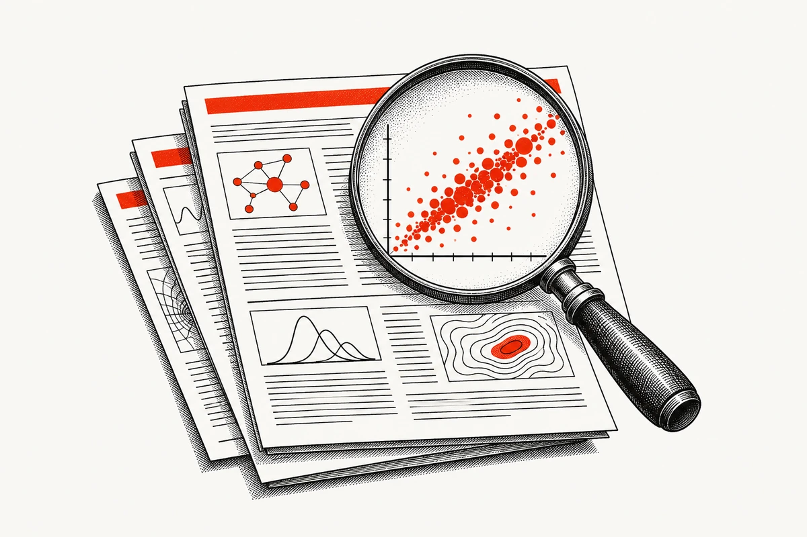
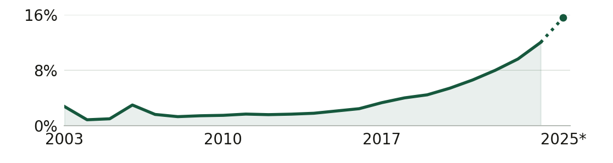
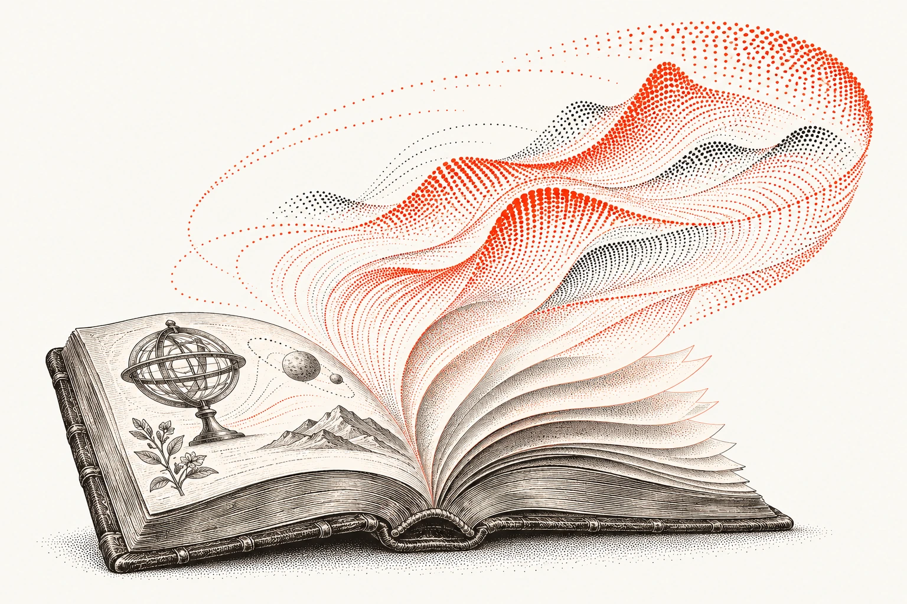
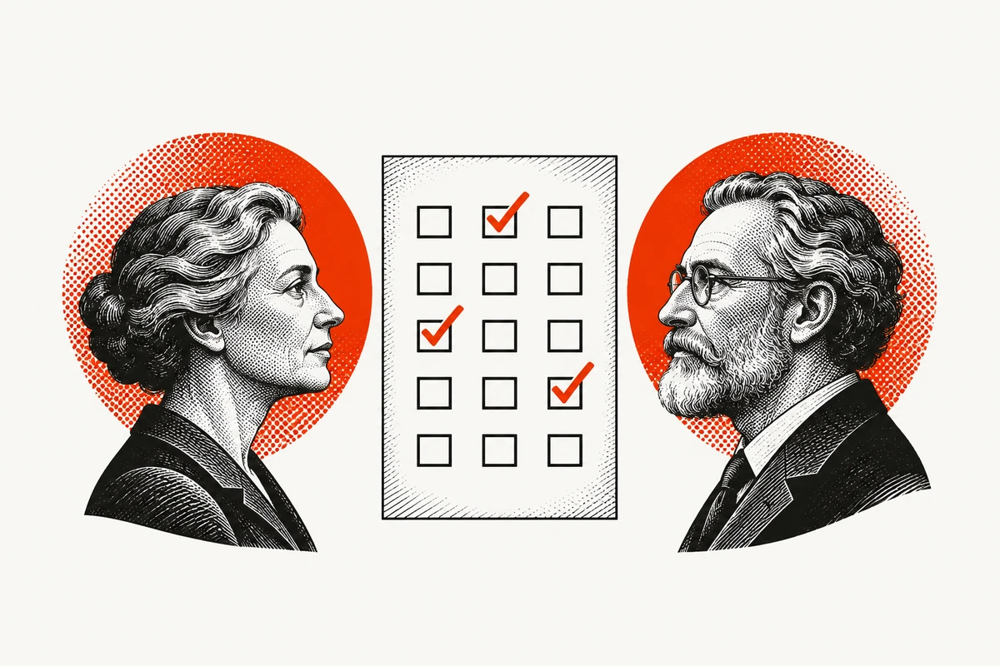
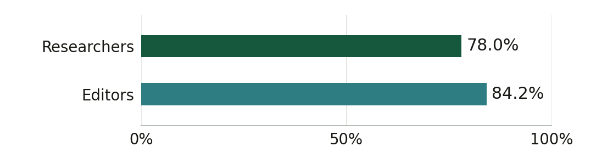

Publication analysis
Data Trend
Track AI adoption, primary data collection and reuse across 353,810 PLOS articles received from 2003 to 2025.
Read study

We study how artificial intelligence is changing the ways researchers collect data, reuse evidence and publish their findings.
Explore the studies
Track AI adoption, primary data collection and reuse across 353,810 PLOS articles received from 2003 to 2025.
Read study

Explore what drives AI adoption and how journals assess AI-assisted work, through surveys of 41 researchers and 19 editors.
Read study

26 researchers from 19 institutions in seven countries, working across information science, environmental science, agriculture, medicine and engineering.